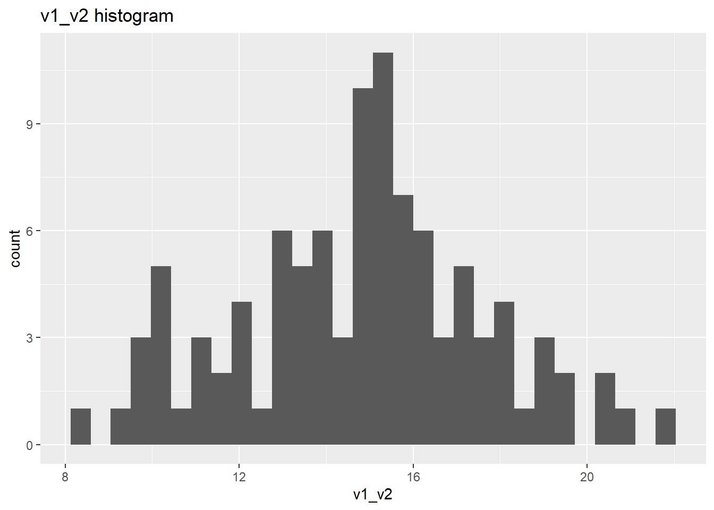
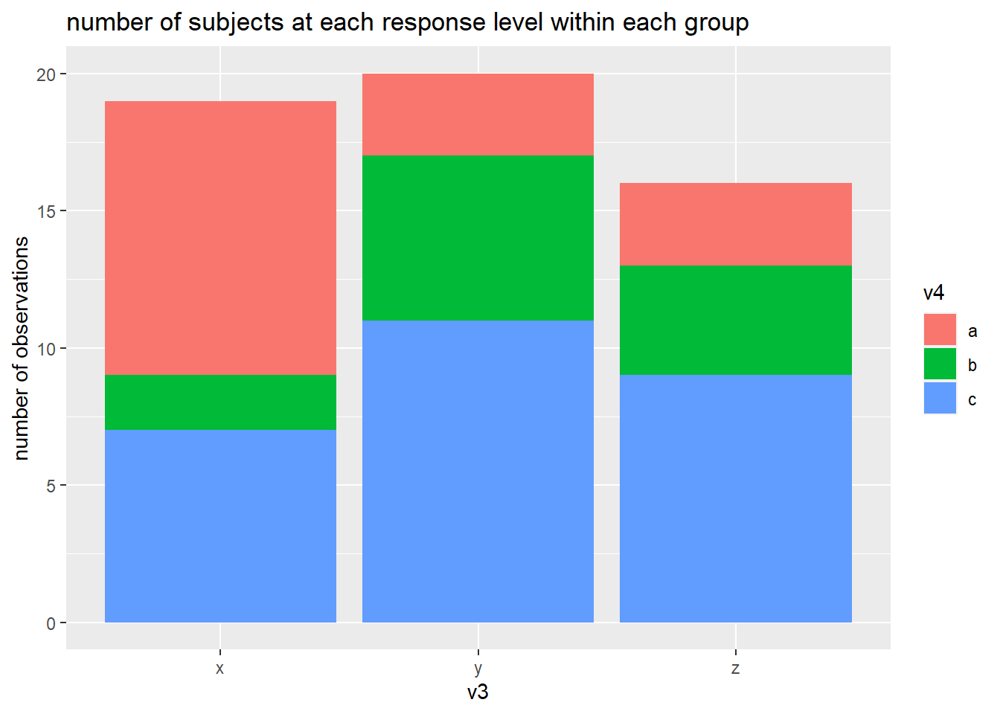

Translation Syntax Example
Package Deposit
## install.packages("descr")
library(descr) # freq()
## install.packages("ggplot2")
library(ggplot2)Data Management
Data Management
create a data set with categorical and numeric variables and save as .csv
# numerical variable
v1 <- runif(100, 0, 7.5) # generate 10 random numbers between 0 and 7.5
v2 <- runif(100, 7.5, 15)
# categorical variable
v3 <- sample(c("x", "y", "z", "n"), size = 100, replace = T) # randomly sample 10 observations out of x, y, z
v4 <- sample(c("a", "b", "c", "n"), size = 100, replace = T)
v5 <- sample(c("p", "q", "n"), size = 100, replace = T)
# combine variables into a dataframe
ie.df <- data.frame(v1, v2, v3, v4, v5)
# save as csv
write.table(ie.df, file = "C:\\Users\\tonyr\\Downloads\\QAC201Z_Material\\example.csv", sep = ",", row.names = F)sort the data
sort by ascending v1
ie.df <- ie.df[order(ie.df$v1, decreasing = F), ]select responses
subset observations with x
ie.x <- ie.df[ie.df$v3 == "x", ]subset observations with x and a
ie.xa <- ie.df[ie.df$v3 == "x" & ie.df$v4 == "a", ]Deal with missing data
label missing data as NA
- v3, v4, v5 “n” codes for missing data
ie.df$v3[ie.df$v3 == "n"] <- NA
ie.df$v4[ie.df$v4 == "n"] <- NA
ie.df$v5[ie.df$v5 == "n"] <- NAsubset observations without NA values in any variables
na.omit(ie.df)## v1 v2 v3 v4 v5
## 71 0.009657004 12.621955 x b q
## 92 0.546545763 14.507008 y b q
## 72 0.716210681 8.214362 y b q
## 96 0.804678038 8.027140 z c q
## 10 0.824152192 13.935469 z c q
## 26 0.939465336 13.869487 z b q
## 9 1.037060855 10.737320 z c p
## 35 1.201467346 13.694009 x a p
## 42 1.222576663 12.979019 y b q
## 66 1.250751962 11.836418 x c q
## 98 1.465760007 8.298217 z b p
## 82 1.590406505 14.636668 x a q
## 11 1.670039211 9.185576 y b p
## 29 2.154953140 13.167701 y b q
## 31 2.194973592 13.917024 x b q
## 91 2.209441829 11.540087 y a p
## 49 2.258524724 12.335784 x b q
## 18 2.927052060 11.872992 y a p
## 67 3.219812923 8.685746 x a q
## 24 3.268127973 9.019977 y b q
## 88 3.742026563 10.882682 z a q
## 28 4.211122885 12.758086 y c q
## 17 4.336197199 11.633365 x a q
## 45 4.478430970 12.128944 y c p
## 25 4.710906346 14.951896 x c q
## 14 4.867132120 8.742521 z c q
## 60 4.911721407 9.318375 z a p
## 2 4.936937566 7.531200 x a p
## 68 4.983747756 7.554185 y c p
## 75 4.988655814 8.204552 z b p
## 79 4.993331992 8.657343 z a p
## 50 5.070830578 12.626621 x b q
## 12 5.138415173 8.315402 y b p
## 52 5.359872152 7.507408 z a p
## 58 5.398326046 10.872044 x c q
## 53 5.439087842 9.617124 y c p
## 6 5.846945677 13.978542 z a p
## 32 6.239883545 12.929120 y a p
## 84 6.873504011 10.290922 x a q
## 39 7.076717197 10.748278 z c q
## 20 7.232377886 8.555976 y b qsubset observations without NA values in selected variable
ie.df[!is.na(ie.df$v3),]## v1 v2 v3 v4 v5
## 85 0.002179576 8.473236 x b <NA>
## 71 0.009657004 12.621955 x b q
## 100 0.012012179 12.458474 y b <NA>
## 41 0.271024405 9.121168 x b <NA>
## 40 0.325949822 13.160657 z <NA> q
## 38 0.502080636 12.292125 x c <NA>
## 92 0.546545763 14.507008 y b q
## 73 0.556529083 10.187641 x a <NA>
## 70 0.631500511 8.644372 x <NA> p
## 57 0.677331822 11.727039 x b <NA>
## 72 0.716210681 8.214362 y b q
## 56 0.754346038 14.936496 x a <NA>
## 96 0.804678038 8.027140 z c q
## 10 0.824152192 13.935469 z c q
## 26 0.939465336 13.869487 z b q
## 9 1.037060855 10.737320 z c p
## 33 1.060870507 8.989172 y <NA> p
## 35 1.201467346 13.694009 x a p
## 42 1.222576663 12.979019 y b q
## 66 1.250751962 11.836418 x c q
## 98 1.465760007 8.298217 z b p
## 82 1.590406505 14.636668 x a q
## 11 1.670039211 9.185576 y b p
## 34 1.801483178 13.400477 z <NA> q
## 29 2.154953140 13.167701 y b q
## 31 2.194973592 13.917024 x b q
## 91 2.209441829 11.540087 y a p
## 49 2.258524724 12.335784 x b q
## 81 2.545718357 8.207647 z b <NA>
## 83 2.560057563 7.765502 x c <NA>
## 1 2.580639325 13.843148 z <NA> p
## 4 2.926545790 10.245453 x <NA> q
## 18 2.927052060 11.872992 y a p
## 61 2.977572173 12.729863 z <NA> q
## 46 2.998026924 13.418218 z c <NA>
## 19 3.079972546 10.448318 z a <NA>
## 67 3.219812923 8.685746 x a q
## 24 3.268127973 9.019977 y b q
## 76 3.411601461 12.407376 y <NA> <NA>
## 62 3.484132903 12.422455 y <NA> <NA>
## 90 3.654839193 10.620423 y <NA> p
## 88 3.742026563 10.882682 z a q
## 23 3.760718933 7.989956 z c <NA>
## 30 3.985675690 7.943735 x a <NA>
## 3 4.114087347 11.879315 x <NA> q
## 28 4.211122885 12.758086 y c q
## 17 4.336197199 11.633365 x a q
## 45 4.478430970 12.128944 y c p
## 22 4.557825684 14.045451 x <NA> p
## 25 4.710906346 14.951896 x c q
## 94 4.832001100 12.636169 x <NA> p
## 14 4.867132120 8.742521 z c q
## 65 4.892560167 14.864709 y <NA> <NA>
## 60 4.911721407 9.318375 z a p
## 2 4.936937566 7.531200 x a p
## 68 4.983747756 7.554185 y c p
## 75 4.988655814 8.204552 z b p
## 79 4.993331992 8.657343 z a p
## 50 5.070830578 12.626621 x b q
## 12 5.138415173 8.315402 y b p
## 52 5.359872152 7.507408 z a p
## 47 5.361484765 13.019313 z <NA> <NA>
## 58 5.398326046 10.872044 x c q
## 53 5.439087842 9.617124 y c p
## 63 5.690976712 11.009398 x <NA> q
## 6 5.846945677 13.978542 z a p
## 54 5.973747946 9.870250 y b <NA>
## 32 6.239883545 12.929120 y a p
## 51 6.376294958 11.043361 z <NA> <NA>
## 78 6.435212944 12.456667 y <NA> q
## 95 6.540765718 11.160692 y <NA> p
## 84 6.873504011 10.290922 x a q
## 39 7.076717197 10.748278 z c q
## 59 7.097547306 10.665593 z <NA> q
## 5 7.222168256 13.045916 x b <NA>
## 20 7.232377886 8.555976 y b q
## 69 7.239493778 11.861519 x b <NA>
## 93 7.312573121 14.186555 z a <NA>
## 87 7.455100691 9.715242 y <NA> pcreate secondary variables
bin v1 into 4 sections
ie.df$v6[ie.df$v1 < 2] <- 1
ie.df$v6[ie.df$v1 >=2 & ie.df$v1 < 4] <- 2
ie.df$v6[ie.df$v1 >= 4 & ie.df$v1 < 6] <- 3
ie.df$v6[ie.df$v1 >= 6 & ie.df$v1 < 8] <- 4combine v3 and v4 into v7
ie.df$v7[is.na(ie.df$v3) | is.na(ie.df$v4)] <- NA
ie.df$v7[ie.df$v3 == "x" & ie.df$v4 == "a"] <- "xa"
ie.df$v7[ie.df$v3 == "x" & ie.df$v4 == "b"] <- "xb"
ie.df$v7[ie.df$v3 == "x" & ie.df$v4 == "c"] <- "xc"
ie.df$v7[ie.df$v3 == "y" & ie.df$v4 == "a"] <- "ya"
ie.df$v7[ie.df$v3 == "y" & ie.df$v4 == "b"] <- "yb"
ie.df$v7[ie.df$v3 == "y" & ie.df$v4 == "c"] <- "yc"
ie.df$v7[ie.df$v3 == "z" & ie.df$v4 == "a"] <- "za"
ie.df$v7[ie.df$v3 == "z" & ie.df$v4 == "b"] <- "zb"
ie.df$v7[ie.df$v3 == "z" & ie.df$v4 == "c"] <- "zc"sum up v1 and v2 into v7
ie.df$v8 <- ie.df$v1 + ie.df$v2rename variable
names(ie.df)[names(ie.df) == "v8"] <- "v1_v2"
names(ie.df)[names(ie.df) == "v7"] <- "v3_v4"
names(ie.df)[names(ie.df) == "v6"] <- "v1_level"label variable values
levels(ie.df$v1_level) <- c("lowest", "low", "high", "highest")Univariate Analysis
Univariate Analysis
Categorical Variables
frequency
# frequency
#library(descr)
freq(as.ordered(ie.df$v3_v4))
## as.ordered(ie.df$v3_v4)
## Frequency Percent Valid Percent Cum Percent
## xa 9 9 15.517 15.52
## xb 9 9 15.517 31.03
## xc 5 5 8.621 39.66
## ya 3 3 5.172 44.83
## yb 10 10 17.241 62.07
## yc 4 4 6.897 68.97
## za 7 7 12.069 81.03
## zb 4 4 6.897 87.93
## zc 7 7 12.069 100.00
## NA's 42 42
## Total 100 100 100.000frequency bar plot w. ggplot
#library(ggplot2)
ggplot(data = na.omit(ie.df)) + # na.omit() removes any observations containing NA
geom_bar(aes(x = v3_v4)) +
ggtitle("v3_v4 frequency barplot")
Numeric Variables
mean
mean(ie.df$v1_v2, na.rm = T)## [1] 14.60404standard deviation
sd(ie.df$v1_v2, na.rm = T)## [1] 3.183863histogram w. ggplot
ggplot(data = ie.df)+
geom_histogram(aes(x = v1_v2))+
ggtitle("v1_v2 histogram")
Bivariate Analysis
Bivariate Analysis
Categorical-Categorical (crosstabs)
crosstabs
table(ie.df$v3, ie.df$v4)##
## a b c
## x 9 9 5
## y 3 10 4
## z 7 4 7column proportions
prop.table(table(ie.df$v3, ie.df$v4), 2) # col proportions##
## a b c
## x 0.4736842 0.3913043 0.3125000
## y 0.1578947 0.4347826 0.2500000
## z 0.3684211 0.1739130 0.4375000row proportions
prop.table(table(ie.df$v3, ie.df$v4), 1) # row proportions##
## a b c
## x 0.3913043 0.3913043 0.2173913
## y 0.1764706 0.5882353 0.2352941
## z 0.3888889 0.2222222 0.3888889cell proportions
prop.table(table(ie.df$v3, ie.df$v4)) # cell proportions##
## a b c
## x 0.15517241 0.15517241 0.08620690
## y 0.05172414 0.17241379 0.06896552
## z 0.12068966 0.06896552 0.12068966Graphs
for binary categorical response
# for binary categorical response
graph_data <- data.frame(v3 = na.omit(ie.df)$v3,
v5 = ifelse(na.omit(ie.df)$v5 == "p", 0, 1))
ggplot(data = graph_data)+
stat_summary(aes(x=v3, y = v5), fun = "mean", geom = "bar")+
ylab("poriton of responses that are '1 (aka. q)'")+
ggtitle("percentage of q within v3 groups")
for multi-level categorical responses
# stacked barplot for mutli-level categorical responses
graph_data <- data.frame(v4 = c(rep("a", 3), rep("b", 3), rep("c", 3)),
v3 = rep(c("x", "y", "z"), 3),
value = as.numeric(table(ie.df$v3, ie.df$v4)))
ggplot(data = graph_data, aes(fill = v4, x = v3, y = value))+
geom_bar(position = "stack", stat = "identity")+
ylab("number of observations")+
ggtitle("number of subjects at each response level within each group")
Numeric-Categorical
stats by group
Mean
by(ie.df$v1, ie.df$v3_v4, mean, na.rm = T)## ie.df$v3_v4: xa
## [1] 3.050542
## ---------------------------------------------------------
## ie.df$v3_v4: xb
## [1] 2.771798
## ---------------------------------------------------------
## ie.df$v3_v4: xc
## [1] 2.884425
## ---------------------------------------------------------
## ie.df$v3_v4: ya
## [1] 3.792126
## ---------------------------------------------------------
## ie.df$v3_v4: yb
## [1] 2.793501
## ---------------------------------------------------------
## ie.df$v3_v4: yc
## [1] 4.778097
## ---------------------------------------------------------
## ie.df$v3_v4: za
## [1] 5.035206
## ---------------------------------------------------------
## ie.df$v3_v4: zb
## [1] 2.4849
## ---------------------------------------------------------
## ie.df$v3_v4: zc
## [1] 3.052641standard deviation
by(ie.df$v1, ie.df$v3_v4, sd, na.rm = T)## ie.df$v3_v4: xa
## [1] 2.172937
## ---------------------------------------------------------
## ie.df$v3_v4: xb
## [1] 2.991419
## ---------------------------------------------------------
## ie.df$v3_v4: xc
## [1] 2.127522
## ---------------------------------------------------------
## ie.df$v3_v4: ya
## [1] 2.149972
## ---------------------------------------------------------
## ie.df$v3_v4: yb
## [1] 2.511746
## ---------------------------------------------------------
## ie.df$v3_v4: yc
## [1] 0.544812
## ---------------------------------------------------------
## ie.df$v3_v4: za
## [1] 1.382207
## ---------------------------------------------------------
## ie.df$v3_v4: zb
## [1] 1.798101
## ---------------------------------------------------------
## ie.df$v3_v4: zc
## [1] 2.382995number of observations
by(ie.df$v1, ie.df$v3_v4, length)## ie.df$v3_v4: xa
## [1] 9
## ---------------------------------------------------------
## ie.df$v3_v4: xb
## [1] 9
## ---------------------------------------------------------
## ie.df$v3_v4: xc
## [1] 5
## ---------------------------------------------------------
## ie.df$v3_v4: ya
## [1] 3
## ---------------------------------------------------------
## ie.df$v3_v4: yb
## [1] 10
## ---------------------------------------------------------
## ie.df$v3_v4: yc
## [1] 4
## ---------------------------------------------------------
## ie.df$v3_v4: za
## [1] 7
## ---------------------------------------------------------
## ie.df$v3_v4: zb
## [1] 4
## ---------------------------------------------------------
## ie.df$v3_v4: zc
## [1] 7Graph
barplot
ggplot(data = na.omit(ie.df))+
stat_summary(aes(x = v3_v4, y = v1), fun = "mean", geom = "bar")+
ggtitle("mean barplot")
boxplot
ggplot(data = na.omit(ie.df))+
geom_boxplot(aes(x = v3_v4, y = v1))+
ggtitle("boxplot")
Numeric-Numeric
ggplot(data = na.omit(ie.df), aes(x = v1, y = v1_v2))+
geom_point()+
geom_smooth(method = "lm")+
ggtitle("Correlation between v1_v2 and v1")
Multivariate Analysis (Bivariate by subpopulation)
Multivariate Analysis
Categorical-Categorical
C \(\Rightarrow\) C
binary categorical response
graph_data <- data.frame(v3 = na.omit(ie.df)$v3,
v5 = ifelse(na.omit(ie.df)$v5 == "p", 0, 1),
v4 = na.omit(ie.df)$v4)
ggplot(data = graph_data)+
stat_summary(aes(x=v3, y = v5), fun = "mean", geom = "bar")+
facet_grid(.~v4)+
ylab("poriton of responses that are '1 (aka. q)'")+
ggtitle("percentage of q within v3 groups")
multi-level categorical response
graph_data <- data.frame(v4 = rep(c(rep("a", 3), rep("b", 3), rep("c", 3)), 2),
v3 = rep(c("x", "y", "z"), 6),
value = c(as.numeric(table(ie.df[ie.df$v5 == "p",]$v3, ie.df[ie.df$v5 == "p",]$v4)),
as.numeric(table(ie.df[ie.df$v5 == "q",]$v3, ie.df[ie.df$v5 == "q",]$v4))),
v5 = c(rep("p", 9), rep("q", 9)))
ggplot(data = graph_data)+
geom_bar(position = "stack", aes(fill = v4, x = v3, y = value), stat = "identity")+
facet_grid(.~v5)+
ylab("number of observations")+
ggtitle("number of subjects at each response level within each group")
Numeric-Categorical
C \(\Rightarrow\) N
mean by group
# mean by group
ftable(by(ie.df$v1_v2, list(ie.df$v3_v4, ie.df$v5), mean, na.rm = T))## p q
##
## xa 13.68181 15.31666
## xb NA 15.25884
## xc NA 16.34011
## ya 15.90619 NA
## yb 12.15472 13.59747
## yc 14.73384 16.96921
## za 15.14338 14.62471
## zb 11.47859 14.80895
## zc 11.77438 13.75652boxplot
ggplot(data = na.omit(ie.df)) +
geom_boxplot(aes(x = v3_v4, y = v1_v2))+
facet_grid(.~v5)+
ggtitle("")
Numeric-Numeric
N \(\Rightarrow\) N
ggplot(data = na.omit(ie.df), aes(x = v1, y = v1_v2))+
geom_point()+
geom_smooth(method = "lm")+
facet_grid(.~v5)
Hypothesis Testing
Hypothesis Testing
Categorical-Categorical (\(\chi^2\))
\(\chi^2\) Test (C \(\Rightarrow\) C)
Bivariate
chi-square
# chisquare
chisq.test(na.omit(ie.df)$v4, na.omit(ie.df)$v3)##
## Pearson's Chi-squared test
##
## data: na.omit(ie.df)$v4 and na.omit(ie.df)$v3
## X-squared = 3.9979, df = 4, p-value = 0.4063chi-square cell counts
chisq.test(na.omit(ie.df)$v4, na.omit(ie.df)$v3)$observed## na.omit(ie.df)$v3
## na.omit(ie.df)$v4 x y z
## a 6 3 5
## b 4 8 3
## c 3 4 5posthoc (for more than two levels)
source("https://raw.githubusercontent.com/PassionDrivenStatistics/R/master/ChiSquarePostHoc.R")
chisq.post.hoc(chisq.test(na.omit(ie.df)$v4, na.omit(ie.df)$v3)$observed,
popsInRows = F,
control = "bonferroni")## Adjusted p-values used the bonferroni method.## comparison raw.p adj.p
## 1 x vs. y 0.3903 1.0000
## 2 x vs. z 0.7823 1.0000
## 3 y vs. z 0.3201 0.9602# Pearson Residuals
chisq.test(na.omit(ie.df)$v4, na.omit(ie.df)$v3)$residuals## na.omit(ie.df)$v3
## na.omit(ie.df)$v4 x y z
## a 0.7408876 -0.9376002 0.2662565
## b -0.3466989 1.0723932 -0.8052361
## c -0.4126290 -0.1862481 0.6126915Multivariate
by(na.omit(ie.df), na.omit(ie.df)$v5, function(x) list(chisq.test(x$v4, x$v3),
chisq.test(x$v4, x$v3)$observed,
prop.table(chisq.test(x$v4, x$v3)$observed, 2)))## na.omit(ie.df)$v5: p
## [[1]]
##
## Pearson's Chi-squared test
##
## data: x$v4 and x$v3
## X-squared = 3.1622, df = 4, p-value = 0.5311
##
##
## [[2]]
## x$v3
## x$v4 x y z
## a 2 3 4
## b 0 2 2
## c 0 3 1
##
## [[3]]
## x$v3
## x$v4 x y z
## a 1.0000000 0.3750000 0.5714286
## b 0.0000000 0.2500000 0.2857143
## c 0.0000000 0.3750000 0.1428571
##
## ---------------------------------------------------------
## na.omit(ie.df)$v5: q
## [[1]]
##
## Pearson's Chi-squared test
##
## data: x$v4 and x$v3
## X-squared = 9.4229, df = 4, p-value = 0.05136
##
##
## [[2]]
## x$v3
## x$v4 x y z
## a 4 0 1
## b 4 6 1
## c 3 1 4
##
## [[3]]
## x$v3
## x$v4 x y z
## a 0.3636364 0.0000000 0.1666667
## b 0.3636364 0.8571429 0.1666667
## c 0.2727273 0.1428571 0.6666667Numeric-Categorical (ANOVA)
ANOVA Test (C \(\Rightarrow\) N)
Bivariate
ANOVA
summary(aov(v1_v2 ~ v3_v4, data = na.omit(ie.df)))## Df Sum Sq Mean Sq F value Pr(>F)
## v3_v4 8 52.99 6.624 0.981 0.468
## Residuals 32 216.05 6.752posthoc (for more than two levels)
TukeyHSD(aov(v1_v2 ~ v3_v4, data = na.omit(ie.df)))## Tukey multiple comparisons of means
## 95% family-wise confidence level
##
## Fit: aov(formula = v1_v2 ~ v3_v4, data = na.omit(ie.df))
##
## $v3_v4
## diff lwr upr p adj
## xb-xa 0.48713644 -5.085138 6.059411 0.9999980
## xc-xa 1.56840833 -4.535713 7.672529 0.9939242
## ya-xa 1.13448638 -4.969635 7.238607 0.9993674
## yb-xa -1.53492257 -6.197022 3.127177 0.9710054
## yc-xa 0.52097615 -5.051298 6.093251 0.9999966
## za-xa 0.26794338 -4.959314 5.495200 1.0000000
## zb-xa -2.18299336 -8.287114 3.921128 0.9533218
## zc-xa -1.41161200 -6.638869 3.815645 0.9915676
## xc-xb 1.08127189 -5.511932 7.674476 0.9997476
## ya-xb 0.64734993 -5.945854 7.240554 0.9999950
## yb-xb -2.02205902 -7.308383 3.264265 0.9326138
## yc-xb 0.03383971 -6.070281 6.137961 1.0000000
## za-xb -0.21919306 -6.010071 5.571685 1.0000000
## zb-xb -2.67012980 -9.263334 3.923074 0.9093738
## zc-xb -1.89874844 -7.689626 3.892129 0.9717008
## ya-xc -0.43392196 -7.482354 6.614510 0.9999999
## yb-xc -3.10333090 -8.947582 2.740920 0.7038163
## yc-xc -1.04743218 -7.640636 5.545772 0.9998007
## za-xc -1.30046495 -7.604774 5.003844 0.9986619
## zb-xc -3.75140169 -10.799833 3.297030 0.7013318
## zc-xc -2.98002033 -9.284329 3.324289 0.8131250
## yb-ya -2.66940895 -8.513660 3.174842 0.8391577
## yc-ya -0.61351022 -7.206714 5.979694 0.9999967
## za-ya -0.86654300 -7.170852 5.437766 0.9999329
## zb-ya -3.31747973 -10.365912 3.730952 0.8165409
## zc-ya -2.54609838 -8.850407 3.758211 0.9106317
## yc-yb 2.05589873 -3.230425 7.342223 0.9264418
## za-yb 1.80286595 -3.118434 6.724166 0.9466517
## zb-yb -0.64807078 -6.492322 5.196180 0.9999871
## zc-yb 0.12331057 -4.797989 5.044610 1.0000000
## za-yc -0.25303278 -6.043910 5.537845 1.0000000
## zb-yc -2.70396951 -9.297174 3.889235 0.9034465
## zc-yc -1.93258816 -7.723466 3.858289 0.9685961
## zb-za -2.45093673 -8.755246 3.853372 0.9265779
## zc-za -1.67955538 -7.139247 3.780136 0.9807408
## zc-zb 0.77138135 -5.532928 7.075690 0.9999724Multivariate
by(na.omit(ie.df), na.omit(ie.df)$v5, function(x) list(aov(v1_v2 ~ v3_v4, data = x),
summary(aov(v1_v2 ~ v3_v4, data = x)),
TukeyHSD(aov(v1_v2 ~ v3_v4, data = x))))## na.omit(ie.df)$v5: p
## [[1]]
## Call:
## aov(formula = v1_v2 ~ v3_v4, data = x)
##
## Terms:
## v3_v4 Residuals
## Sum of Squares 42.37913 67.32290
## Deg. of Freedom 6 10
##
## Residual standard error: 2.594666
## Estimated effects may be unbalanced
##
## [[2]]
## Df Sum Sq Mean Sq F value Pr(>F)
## v3_v4 6 42.38 7.063 1.049 0.45
## Residuals 10 67.32 6.732
##
## [[3]]
## Tukey multiple comparisons of means
## 95% family-wise confidence level
##
## Fit: aov(formula = v1_v2 ~ v3_v4, data = x)
##
## $v3_v4
## diff lwr upr p adj
## ya-xa 2.2243853 -6.357822 10.806593 0.9566929
## yb-xa -1.5270908 -10.928428 7.874246 0.9957666
## yc-xa 1.0520327 -7.530175 9.634240 0.9990972
## za-xa 1.4615776 -6.680219 9.603374 0.9928223
## zb-xa -2.2032145 -11.604551 7.198123 0.9728337
## zc-xa -1.9074259 -13.421665 9.606813 0.9952988
## yb-ya -3.7514760 -12.333683 4.830731 0.6948321
## yc-ya -1.1723526 -8.848512 6.503807 0.9969611
## za-ya -0.7628077 -7.943197 6.417582 0.9995985
## zb-ya -4.4275998 -13.009807 4.154607 0.5372180
## zc-ya -4.1318112 -14.987540 6.723918 0.8011506
## yc-yb 2.5791235 -6.003084 11.161331 0.9179292
## za-yb 2.9886683 -5.153128 11.130465 0.8242596
## zb-yb -0.6761237 -10.077461 8.725213 0.9999581
## zc-yb -0.3803351 -11.894574 11.133904 0.9999996
## za-yc 0.4095448 -6.770845 7.589935 0.9999893
## zb-yc -3.2552472 -11.837454 5.326960 0.8034356
## zc-yc -2.9594586 -13.815187 7.896270 0.9457767
## zb-za -3.6647920 -11.806589 4.477005 0.6689542
## zc-za -3.3690034 -13.880018 7.142011 0.8936558
## zc-zb 0.2957886 -11.218451 11.810028 0.9999999
##
##
## ---------------------------------------------------------
## na.omit(ie.df)$v5: q
## [[1]]
## Call:
## aov(formula = v1_v2 ~ v3_v4, data = x)
##
## Terms:
## v3_v4 Residuals
## Sum of Squares 26.76273 127.53910
## Deg. of Freedom 7 16
##
## Residual standard error: 2.82333
## Estimated effects may be unbalanced
##
## [[2]]
## Df Sum Sq Mean Sq F value Pr(>F)
## v3_v4 7 26.76 3.823 0.48 0.836
## Residuals 16 127.54 7.971
##
## [[3]]
## Tukey multiple comparisons of means
## 95% family-wise confidence level
##
## Fit: aov(formula = v1_v2 ~ v3_v4, data = x)
##
## $v3_v4
## diff lwr upr p adj
## xb-xa -0.05781301 -6.969637 6.854011 1.0000000
## xc-xa 1.02345888 -6.442164 8.489082 0.9996387
## yb-xa -1.71918299 -8.028786 4.590420 0.9764055
## yc-xa 1.65255374 -9.275999 12.581106 0.9993164
## za-xa -0.69194720 -11.620500 10.236605 0.9999981
## zb-xa -0.50770276 -11.436255 10.420850 0.9999998
## zc-xa -1.56013326 -8.471957 5.351690 0.9918438
## xc-xb 1.08127189 -6.384351 8.546895 0.9994829
## yb-xb -1.66136999 -7.970973 4.648233 0.9804220
## yc-xb 1.71036675 -9.218186 12.638919 0.9991470
## za-xb -0.63413419 -11.562687 10.294418 0.9999989
## zb-xb -0.44988976 -11.378442 10.478663 0.9999999
## zc-xb -1.50232025 -8.414144 5.409503 0.9934711
## yb-xc -2.74264188 -9.654465 4.169182 0.8562049
## yc-xc 0.62909486 -10.657866 11.916056 0.9999992
## za-xc -1.71540608 -13.002367 9.571555 0.9992937
## zb-xc -1.53116165 -12.818122 9.755799 0.9996627
## zc-xc -2.58359214 -10.049215 4.882031 0.9211030
## yc-yb 3.37173673 -7.186248 13.929722 0.9463117
## za-yb 1.02723580 -9.530749 11.585221 0.9999633
## zb-yb 1.21148023 -9.346505 11.769465 0.9998887
## zc-yb 0.15904974 -6.150553 6.468653 1.0000000
## za-yc -2.34450094 -16.168148 11.479146 0.9985767
## zb-yc -2.16025651 -15.983904 11.663391 0.9991551
## zc-yc -3.21268700 -14.141240 7.715866 0.9647027
## zb-za 0.18424443 -13.639403 14.007892 1.0000000
## zc-za -0.86818606 -11.796739 10.060367 0.9999908
## zc-zb -1.05243049 -11.980983 9.876122 0.9999658Numeric-Numeric (Pearson Correlation)
Pearson Correlation (N \(\Rightarrow\) N)
Bivariate
cor.test(na.omit(ie.df)$v1_v2, na.omit(ie.df)$v1)##
## Pearson's product-moment correlation
##
## data: na.omit(ie.df)$v1_v2 and na.omit(ie.df)$v1
## t = 3.7906, df = 39, p-value = 0.0005093
## alternative hypothesis: true correlation is not equal to 0
## 95 percent confidence interval:
## 0.2513572 0.7127529
## sample estimates:
## cor
## 0.5188824Multivariate
by(na.omit(ie.df), na.omit(ie.df)$v5, function(x) cor.test(x$v1_v2, x$v1))## na.omit(ie.df)$v5: p
##
## Pearson's product-moment correlation
##
## data: x$v1_v2 and x$v1
## t = 2.5163, df = 15, p-value = 0.02373
## alternative hypothesis: true correlation is not equal to 0
## 95 percent confidence interval:
## 0.08692502 0.81265219
## sample estimates:
## cor
## 0.5448077
##
## ---------------------------------------------------------
## na.omit(ie.df)$v5: q
##
## Pearson's product-moment correlation
##
## data: x$v1_v2 and x$v1
## t = 3.3686, df = 22, p-value = 0.002771
## alternative hypothesis: true correlation is not equal to 0
## 95 percent confidence interval:
## 0.2353040 0.7987666
## sample estimates:
## cor
## 0.5833305Regression
Regression
linear regression (numeric response)
Linear
simple
summary(lm(v1_v2 ~ v1, data = na.omit(ie.df)))##
## Call:
## lm(formula = v1_v2 ~ v1, data = na.omit(ie.df))
##
## Residuals:
## Min 1Q Median 3Q Max
## -3.9108 -2.0491 0.4037 1.8960 4.3916
##
## Coefficients:
## Estimate Std. Error t value Pr(>|t|)
## (Intercept) 12.2217 0.6888 17.743 < 2e-16 ***
## v1 0.6473 0.1708 3.791 0.000509 ***
## ---
## Signif. codes: 0 '***' 0.001 '**' 0.01 '*' 0.05 '.' 0.1 ' ' 1
##
## Residual standard error: 2.245 on 39 degrees of freedom
## Multiple R-squared: 0.2692, Adjusted R-squared: 0.2505
## F-statistic: 14.37 on 1 and 39 DF, p-value: 0.0005093multiple
summary(lm(v1_v2 ~ v1 + factor(v5), data = na.omit(ie.df)))##
## Call:
## lm(formula = v1_v2 ~ v1 + factor(v5), data = na.omit(ie.df))
##
## Residuals:
## Min 1Q Median 3Q Max
## -4.286 -1.575 -0.034 1.526 4.443
##
## Coefficients:
## Estimate Std. Error t value Pr(>|t|)
## (Intercept) 11.1969 0.8562 13.077 1.21e-15 ***
## v1 0.7158 0.1691 4.232 0.000141 ***
## factor(v5)q 1.3446 0.7049 1.907 0.064038 .
## ---
## Signif. codes: 0 '***' 0.001 '**' 0.01 '*' 0.05 '.' 0.1 ' ' 1
##
## Residual standard error: 2.173 on 38 degrees of freedom
## Multiple R-squared: 0.3331, Adjusted R-squared: 0.298
## F-statistic: 9.49 on 2 and 38 DF, p-value: 0.0004542multiple w. interaction terms
summary(lm(v1_v2 ~ v1 + factor(v5) + v1*factor(v5), data = na.omit(ie.df)))##
## Call:
## lm(formula = v1_v2 ~ v1 + factor(v5) + v1 * factor(v5), data = na.omit(ie.df))
##
## Residuals:
## Min 1Q Median 3Q Max
## -4.3693 -1.6551 -0.0294 1.5453 4.2936
##
## Coefficients:
## Estimate Std. Error t value Pr(>|t|)
## (Intercept) 10.8751 1.3358 8.141 9.06e-10 ***
## v1 0.7964 0.3069 2.595 0.0135 *
## factor(v5)q 1.7793 1.5478 1.150 0.2577
## v1:factor(v5)q -0.1170 0.3698 -0.316 0.7534
## ---
## Signif. codes: 0 '***' 0.001 '**' 0.01 '*' 0.05 '.' 0.1 ' ' 1
##
## Residual standard error: 2.199 on 37 degrees of freedom
## Multiple R-squared: 0.3349, Adjusted R-squared: 0.281
## F-statistic: 6.21 on 3 and 37 DF, p-value: 0.00159logistic regression (categorical response)
Logistic
simple
summary(glm(factor(v5) ~ v1, data = na.omit(ie.df), family = "binomial")) # p-value##
## Call:
## glm(formula = factor(v5) ~ v1, family = "binomial", data = na.omit(ie.df))
##
## Deviance Residuals:
## Min 1Q Median 3Q Max
## -1.5694 -1.1920 0.8133 1.0108 1.3734
##
## Coefficients:
## Estimate Std. Error z value Pr(>|z|)
## (Intercept) 1.1101 0.6673 1.664 0.0962 .
## v1 -0.2157 0.1609 -1.340 0.1802
## ---
## Signif. codes: 0 '***' 0.001 '**' 0.01 '*' 0.05 '.' 0.1 ' ' 1
##
## (Dispersion parameter for binomial family taken to be 1)
##
## Null deviance: 55.637 on 40 degrees of freedom
## Residual deviance: 53.764 on 39 degrees of freedom
## AIC: 57.764
##
## Number of Fisher Scoring iterations: 4Get Odd Ratios
exp(glm(factor(v5) ~ v1, data = na.omit(ie.df), family = "binomial")$coefficients) # odd-ratios## (Intercept) v1
## 3.0346543 0.8060051Get Confidence Interval of Odd Ratios
exp(confint(glm(factor(v5) ~ v1, data = na.omit(ie.df), family = "binomial"))) # confidence interval of odd ratios## 2.5 % 97.5 %
## (Intercept) 0.8689849 12.483481
## v1 0.5777877 1.096118multiple
summary(glm(factor(v5) ~ v1 + factor(v3), data = na.omit(ie.df), family = "binomial")) # p-value##
## Call:
## glm(formula = factor(v5) ~ v1 + factor(v3), family = "binomial",
## data = na.omit(ie.df))
##
## Deviance Residuals:
## Min 1Q Median 3Q Max
## -2.1652 -0.9846 0.4989 0.9877 1.6101
##
## Coefficients:
## Estimate Std. Error z value Pr(>|z|)
## (Intercept) 2.5117 1.0276 2.444 0.0145 *
## v1 -0.2235 0.1720 -1.300 0.1938
## factor(v3)y -1.8715 0.9453 -1.980 0.0477 *
## factor(v3)z -1.8676 0.9682 -1.929 0.0537 .
## ---
## Signif. codes: 0 '***' 0.001 '**' 0.01 '*' 0.05 '.' 0.1 ' ' 1
##
## (Dispersion parameter for binomial family taken to be 1)
##
## Null deviance: 55.637 on 40 degrees of freedom
## Residual deviance: 48.071 on 37 degrees of freedom
## AIC: 56.071
##
## Number of Fisher Scoring iterations: 4Get Odd Ratios
exp(glm(factor(v5) ~ v1 + factor(v3), data = na.omit(ie.df), family = "binomial")$coefficients) # odd-ratios## (Intercept) v1 factor(v3)y factor(v3)z
## 12.3261105 0.7996803 0.1538897 0.1544890Get Confidence Interval of Odd Ratios
exp(confint(glm(factor(v5) ~ v1 + factor(v3), data = na.omit(ie.df), family = "binomial"))) # confidence interval of odd ratios## 2.5 % 97.5 %
## (Intercept) 2.03209830 126.0663036
## v1 0.55948213 1.1103148
## factor(v3)y 0.01849287 0.8599878
## factor(v3)z 0.01792421 0.9102064multiple w. interaction terms
summary(glm(factor(v5) ~ v1 + factor(v3) + v1*factor(v3), data = na.omit(ie.df), family = "binomial")) # p-value##
## Call:
## glm(formula = factor(v5) ~ v1 + factor(v3) + v1 * factor(v3),
## family = "binomial", data = na.omit(ie.df))
##
## Deviance Residuals:
## Min 1Q Median 3Q Max
## -1.9904 -0.9663 0.5491 0.9035 1.8615
##
## Coefficients:
## Estimate Std. Error z value Pr(>|z|)
## (Intercept) 1.46719 1.44409 1.016 0.310
## v1 0.07396 0.39251 0.188 0.851
## factor(v3)y -0.32996 1.83096 -0.180 0.857
## factor(v3)z -0.80814 1.81946 -0.444 0.657
## v1:factor(v3)y -0.44386 0.48883 -0.908 0.364
## v1:factor(v3)z -0.30172 0.47481 -0.635 0.525
##
## (Dispersion parameter for binomial family taken to be 1)
##
## Null deviance: 55.637 on 40 degrees of freedom
## Residual deviance: 47.225 on 35 degrees of freedom
## AIC: 59.225
##
## Number of Fisher Scoring iterations: 4Get Odd Ratios
exp(glm(factor(v5) ~ v1 + factor(v3) + v1*factor(v3), data = na.omit(ie.df), family = "binomial")$coefficients) # odd-ratios## (Intercept) v1 factor(v3)y factor(v3)z v1:factor(v3)y
## 4.3370291 1.0767610 0.7189543 0.4456843 0.6415574
## v1:factor(v3)z
## 0.7395445Get Confidence Interval of Odd Ratios
exp(confint(glm(factor(v5) ~ v1 + factor(v3) + v1*factor(v3), data = na.omit(ie.df), family = "binomial"))) # confidence interval of odd ratios## 2.5 % 97.5 %
## (Intercept) 0.344938595 164.326604
## v1 0.480925867 2.601893
## factor(v3)y 0.011795090 24.290066
## factor(v3)z 0.007321966 14.298452
## v1:factor(v3)y 0.224385196 1.674389
## v1:factor(v3)z 0.267703915 1.898498